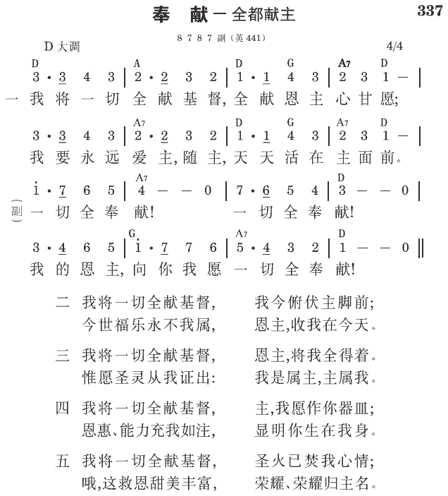

路6:38 你们要给人，就必有给你们的，用十足的量器，连摇带按，上尖下流地倒在你们怀里；因为你们用什么量器量给人，也必用什么量器量给你们。
从人因着堕落，和神出了事，离弃了以神作人一切的地位，财物就变成堕落人类生活中一件要害的事。神的仇敌撒但魔鬼，也就趁机利用人这种堕落的光景，进来诱骗人，为着发财得利而敬拜财神一类的偶像。所以主耶稣才对我们说，一个人“不能事奉神，又事奉玛门”（太六24）。
神的赐与
“不要寄望于无定的钱财，只要寄望于那将百物丰富地供给我们享受的神。”（提前六17）这话揭开撒但迷人的阴谋，给我们看见，在我们生活中一切物质的享受，表面是来自无定的钱财，实际都是来自神的赐与，都是神丰富的赐与供给我们的。所以，我们不要寄望于那迷人无定的钱财，只要寄望于那将百物丰富的赐与我们，供给我们享受的神。
主的吩咐
“不要为自己积蓄财宝在地上，…只要为自己积蓄财宝在天上。”（太六19~20）主这话，需要我们用积蓄财物的眼光来看。积蓄财物，乃是人用所得的财物，应付一切的生活需用之后，所积存起来的。主在这里吩咐我们，不要把这顾到生活而多余的财物，积蓄在地上，乃要把这财物积蓄在天上，就是把它用在天上的神身上，如济助有需要的人，与他们结交朋友，并推广福音等等。
主的应许
“你们要给人，就必有给你们的，用十足的量器，连摇带按，上尖下流地倒在你们怀里。”（路六38）这是主耶稣亲口所应许的。我们若肯为着神，将我们的财物分赐施与有需要的人，神就必定也有所给我们的，用十足的量器，连摇带按，上尖下流地倒在我们怀里，是丰富充盈的，而不是倒在我们手里，是些微有限的。这交易是何等的有利！
林后九章六节说，“少种的少收，多种的多收。”在人看奉献财物，是把财物给出去了，那知在神看奉献财物乃是撒种，必会有收成，少奉献的少收，多奉献的多收。我们应该相信主这定律中的应许。
玛拉基三章十节：“万军之耶和华说，你们要将当纳的十分之一，全然送入仓库，使我家有粮，以此试试我，是否为你们敞开天上的窗户，倾福与你们，甚至无处可容。”十分之一，是在旧约神要以色列人，将他们的收获奉献给神的法定数量。这充盈的显出神无量丰富之应许的话，虽是在旧约对以色列人说的，按原则说，对新约的信徒也是如此。我们若将当给神的，全然奉献给祂，使召会有丰富的供应，神就必为我们敞开天上的窗户，倾福与我们，甚至无处可容。这是万军之耶和华郑重地应许，我们可以照祂这应许奉献给祂，以此试试祂。
作法
马太六章三至四节：“但你施舍的时候，不要让左手知道右手所作的，好叫你的施舍可在隐密中，你父在隐密中察看，必要报答你。”我们奉献财物给神，无论为着什么用途，都不可行在人前，故意给人看见，要得人的荣耀，从人得到赏赐，这样，就不能得在诸天上之父的赏赐。
奉献财物的重要与价值
我们该看见，奉献财物的重要与价值。原来在神看为“不义的钱财”（路十六9），就是那迷惑人的钱财（太十三22），“无定的钱财，”（提前六17）且会变成“无用的”钱财（路十六9），经过我们属神的人，将它奉献给神，为神使用，竟会成为我们与圣徒的“交通”（林后八4），我们在神面前对人的“义”（九9），也成为神所悦纳的“祭物”（来十三16），并神所喜悦的“馨香之气”（腓四18）。那迷惑人、败坏人、祸害人的钱财，竟会变为我们在神面前所蒙这样超越的祝福！这全在于我们在财物上的奉献 （《生命课程》一七〇至一七四、一七七、一七九至一八〇页）。
参读：《生命课程》第二十四课。
